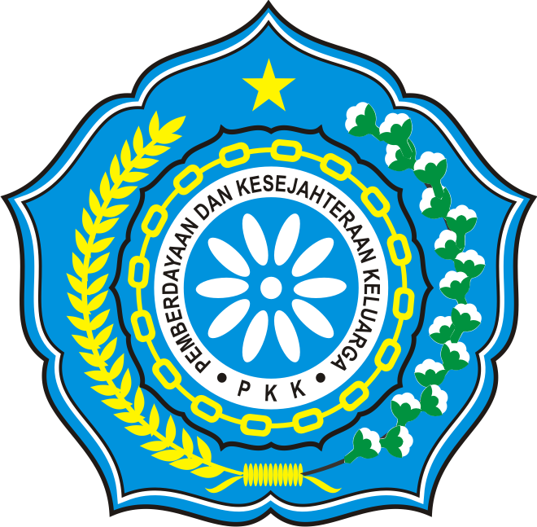
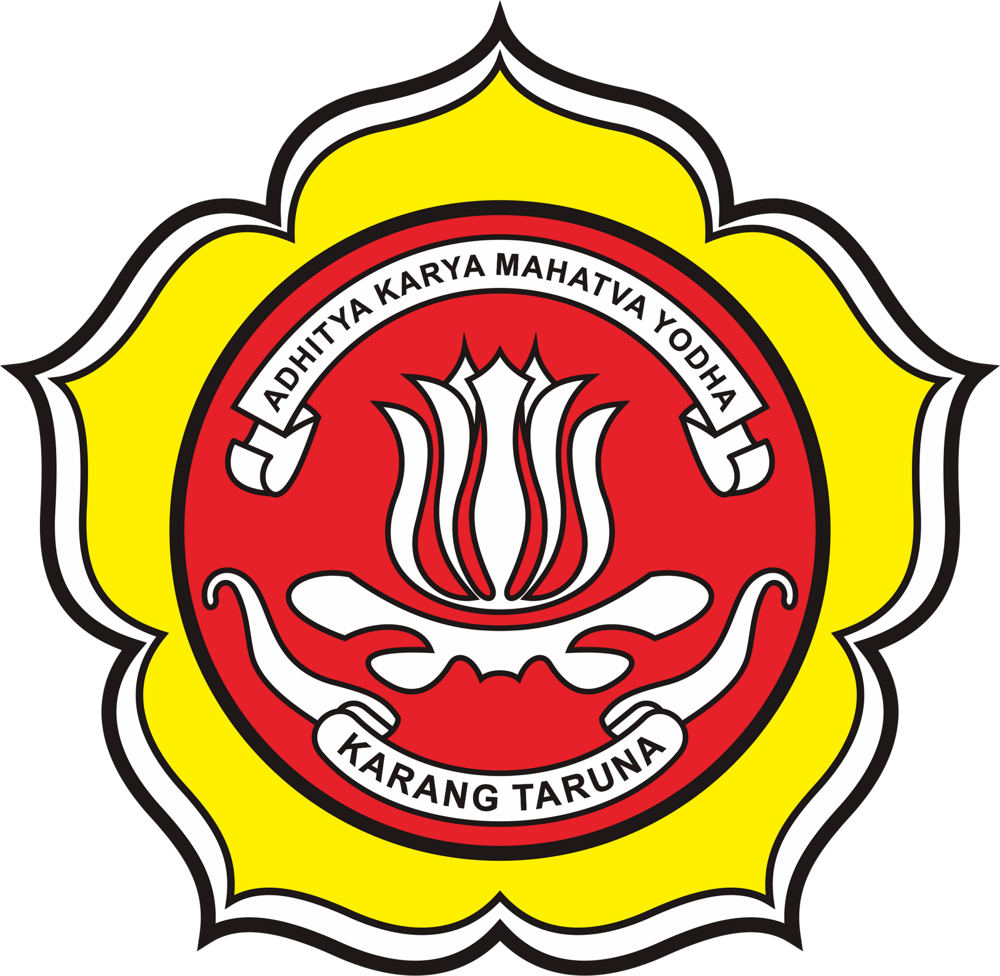

KABUPATEN BUTON KECAMATAN PASARWAJO
TP. PKK DESA
Lembaga Kemasyarakatan desa sebagai mitra kerja pemerintahan dan organisasi kemasyarakatan lainnya, yang berfungsi sebagai Fasilitator, perencanaan, pelaksana, pengendali dan penggerak pada masing-masing jenjang pemerintahan untuk terlaksananya program PKK
KARANG TARUNA
Karang Raruna meruakan wadah pengembangan generasi muda nonparatisme, yang tumbuh atas dasar kesadaran dan rasa tanggung jawab sosial dasi, oleh dan untuk masyarakat desa yang bergerak di bidang kesejeahteraan sosial